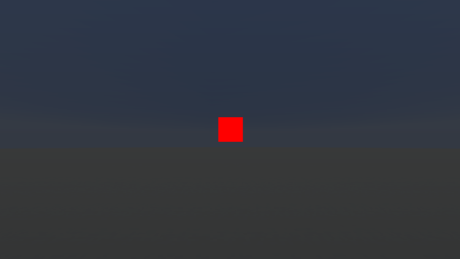
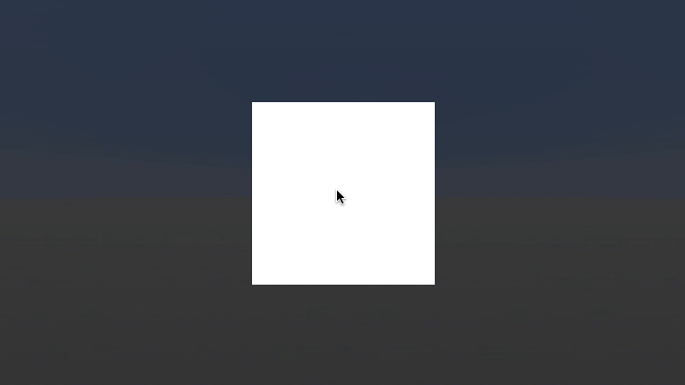
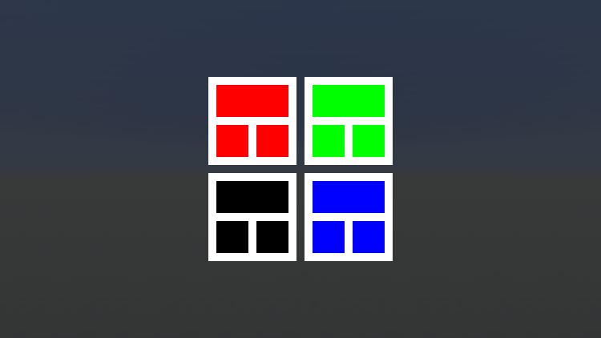
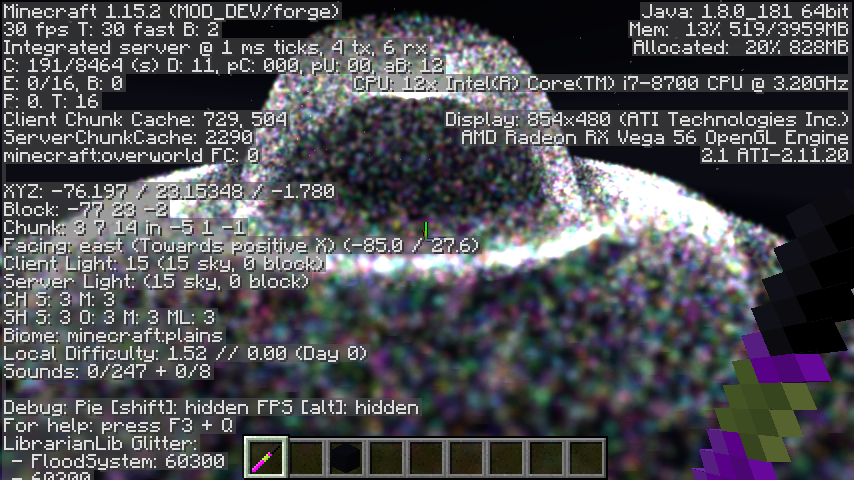

LibrarianLib
LibrarianLib is a suite of libraries designed to help you express your creativity without having to sweat the details. You don’t need to keep track of all the events that go into registering a block, just hand it to LibLib, and we’ll take care of it for you.
LibrarianLib is fundamentally a Java library. The library itself may be written in Kotlin, but it’s been built with the focus on being clean and easy to use from Java code. If you encounter any rough APIs, please join our Discord server and let me know. I do my best to present a clean API, but some stuff inevitably slips through the cracks.
If you aren’t familiar with Kotlin, don’t worry. Kotlin is structurally almost identical to Java, and I’ve written up a quick guide to help get you up to speed on reading Kotlin.
Documentation completeness
LibrarianLib is rather large, and there’s a lot of complex topics to document, so expect this documentation to be very incomplete for quite a while. I’m going to write the documentation in a tutorial style, with each module a self-contained unit that is expected to be read in order.
I try to make the APIs as obvious as I can and prioritize documentation comments for the most confusing stuff, but there’s only so much documentation I can take before I go crazy, sometimes it’s hard to tell from the inside what’s confusing, and sometimes I just forget.
If you find any of the documentation (whether that be this guide or the documentation comments) or APIs especially confusing please contact me (@thecodewarrior) on our Discord server so I can help clarify for you and learn how to improve the docs.
Documentation Examples
This guide contains a lot of examples, so it’ll be useful to go over a couple things about how
the code blocks work. A lot of examples will have irrelevant lines (e.g. imports) hidden away. If
they do, there will be a small eye icon in the top right that can be clicked to show them.
Clicking the “copy” icon beside it will copy them, even if hidden. Most of the complete examples
(i.e. not code snippets) can also be viewed in the main repository. They will be
located in the com.teamwizardry.librarianlib.<modulename>.example package under the
modules/<modulename>/src/test/java directory. Other example-related code (e.g. animated
demonstrations for Facade) will be located in the same package under the .../src/test/java
directory.
Rough APIs
Writing Kotlin code that’s clean from the Java side, while easy most of the time, requires some specific considerations. If you run into any rough APIs in LibrarianLib please tell me about them on Discord so I can resolve them.
Here are a few ways that the Kotlin–Java interface can go wrong:
- Needing to use
SomeClass.INSTANCE.*
(this means I forgot to add@JvmStatic) - Needing to use
SomeClass.Companion.INSTANCE.*
(this means I forgot to add@JvmStatic) - Needing to use a class called
SomeNameKt
(this means I forgot to set the@JvmNameof the file) - Getters for “constant” values, like
SomeClass.getSOME_CONSTANT()
(this means I forgot to add@JvmFieldor need to rename it to usecamelCase) - A public method that accepts a Kotlin
Function1/Function2/etc.
(this means I forgot to use a Java functional interface instead of a Kotlin function type) - Both a public method that accepts a
Consumer/Supplier/etc. and one that accepts a KotlinFunction1/Function2/etc.
(there are some cases this is used, and it means I forgot to mark the Kotlin one as@JvmSynthetic) - A public method with a
$in the name, likesomeMethod$librarianlib
(this means I forgot to add@JvmSyntheticto an internal member)
If you ever run across an API that seems… “funky” from a java perspective, ask about it!
Reading Kotlin cheat sheet
TODO >.<
Foundation
Creating mods has become progressively more complicated and convoluted after every update, which means you have to spend more and more of your time wrestling with a dozen different registry events, blockstate generators, tag generation, capability and tile entity serialization, and even more that you likely missed or forgot about.
This is unacceptable. Every hour you spend wrestling with an event is an hour you aren’t spending creating. That’s where Foundation comes in. Its goal is to maximize the amount of time you spend creating by handling the boilerplate and bullshit for you.
…and oh boy, the bullshit. Minecraft’s codebase is a never-ending source of the stuff, which can often be overwhelming or disheartening for someone who just wants to create. For example…
Did you know that at bare minimum blocks have to be configured in at least eight separate
locations? Or that when generating tags you have to list all the blocks with the tag, as opposed
to adding tags to the block? Or that generating models properly requires wrapping the default
ExistingFileHelper so it doesn’t crash when generating BlockItem models? Or that generating
loot tables involves a list of pairs of biconsumer consumer suppliers and loot parameter sets,
and also requires overriding the validation function so the generator doesn’t just crash?
This is why LibrarianLib, and specifically Foundation exists. I deal with all the bullshit so you don’t have to.
BaseMod
Most Foundation-based mods will extend BaseMod, which provides a lot of boilerplate code,
however most of the functionality it provides (e.g. Registration
Managers) can be used even if you don’t extend BaseMod.
A minimal mod class would look like this. Note that for Kotlin mods being loaded through Kottle,
you have to pass true to the kottleContext constructor parameter.
~import com.teamwizardry.librarianlib.foundation.BaseMod;
~import net.minecraftforge.fml.common.Mod;
~
@Mod(ExampleMod.MODID)
public class ExampleMod extends BaseMod {
public static final String MODID = "examplemod";
public static ExampleMod INSTANCE;
public ExampleMod() {
INSTANCE = this;
setLoggerBaseName("Example Mod");
}
}
BaseMod features
Override points
Trying to remember what events to do what during can be confusing and annoying, so Foundation provides pre-built methods designed to be overridden by subclasses.
commonSetup- Called on theFMLCommonSetupEventclientSetup- Called on theFMLClientSetupEventdedicatedServerSetup- Called on theFMLDedicatedServerSetupEventinterModCommsEnqueue- Send IMC messages hereinterModCommsProcess- Receive IMC messages heremodLoadingContextEventBus- If you’re using a custom mod language provider, override thiscreateRegistries- Create any custom registries hereregisterBlocks†registerItems†registerTileEntities†registerEntities†registerFluids‡registerContainers‡registerSounds‡
† If you can, prefer using the Registration Manager instead
of registering manually.
‡ Support for these in the Registration Manager has not been implemented yet.
Loggers
The default logger configuration for forge means that creating a logger for a specific class results
in a useless mess of a logger name. For example, creating a logger for the MessageScanner class in
Facade would result in a logger named co.te.li.fa.co.me.MessageScanner. That name is ugly and does
little to help identify the actual mod or class. Luckily, Foundation provides a system for making
useful loggers.
At the beginning of your mod constructor, you should call setLoggerBaseName and give it a
human-readable mod name (e.g. "Example Mod"). After you do that, you can get the root logger from
the mod using mod.getLogger() or create custom loggers using mod.makeLogger("Subsystem name") or
mod.makeLogger(SomeClass.class). These two methods will produce loggers named "Example Mod: Subsystem name" and "Example Mod: SomeClass" respectively.
This logger functionality is also available independent of BaseMod in the ModLogManager class.
Recommended mod structure
I won’t prescribe much organization, but I would recommend you have a set of classes (e.g.
ModBlocks, ModItems, ModTiles) that handle registering and holding references to their
specific types of object. The mod class would then call methods on these classes and pass them the
mod’s Registration Manager.
~import com.teamwizardry.librarianlib.foundation.registration.BlockSpec;
~import com.teamwizardry.librarianlib.foundation.registration.LazyBlock;
~import com.teamwizardry.librarianlib.foundation.registration.RegistrationManager;
~
public class ModBlocks {
public static final LazyBlock awesomeBricks = new LazyBlock();
public static void register(RegistrationManager registrationManager) {
awesomeBricks.from(registrationManager.add(
new BlockSpec("awesome_bricks")
// ...spec configuration
));
}
}
You should also add everything to the Registration Manager during your mod’s constructor. This is to ensure everything is set up before any of important events that the Registration Manager uses.
Registration Manager
In the latest versions of Minecraft, registration has splintered into what seems like a thousand different events, meaning the code for setting up a single block may be spread across almost a dozen separate methods in half a dozen different classes in three different packages. This leads to code that’s…
- Difficult to read (you’ll have to hop between multiple functions in multiple files in order to get a sense of a block or item’s configuration),
- difficult to set up correctly (hope you remembered where all you need to put configurations!),
- and difficult to maintain (hope you remembered to update all the occurrences when you made that change!).
The Registration Manager’s job is to handle all this for you.
Architecture
The Registration Manager is designed so you can define an entire “thing” in one place. Everything about your block can be put together, meaning you only have to look in one place to get a full view of it.
Specs
Most of the Registration Manager uses what I call “specs”. A spec is the pre-definition of something which the Registration Manager then uses at the appropriate times to set up your object. For example, the block spec contains block and item properties, a block instance callback, and data generation information, each of which is used in various locations.
The registration manager currently supports:
- Blocks
- Items
- Entities
- Tile Entities
- Capabilities
In the future I hope to add support for:
- Fluids
- GUI containers
- Sounds? (this is very much a maybe)
Lazies
Most of the add methods in the registration manager will take in a spec and return out a “lazy”,
which is a reference to a lazily-computed value. In this way, a block instance isn’t created until
it’s needed. These lazy objects all have a from method, which will delegate the value to another
lazy. Doing it this way means you can still have a final field and just call
theLazyField.from( registrationManager.add(...) ); to set its value.
Items
~import com.teamwizardry.librarianlib.foundation.BaseMod;
~import net.minecraftforge.fml.common.Mod;
~
@Mod(ExampleMod.MODID)
public class ExampleMod extends BaseMod {
public static final String MODID = "examplemod";
public static ExampleMod INSTANCE;
public ExampleMod() {
INSTANCE = this;
setLoggerBaseName("Example Mod");
ModItems.register(getRegistrationManager());
}
}
Basic item
~import com.teamwizardry.librarianlib.foundation.registration.ItemSpec;
~import com.teamwizardry.librarianlib.foundation.registration.LazyItem;
~import com.teamwizardry.librarianlib.foundation.registration.RegistrationManager;
~
public class ModItems {
public static final LazyItem coolItem = new LazyItem();
public static void register(RegistrationManager registrationManager) {
coolItem.from(registrationManager.add(
new ItemSpec("cool_item")
.datagen(dataGen -> {
dataGen.name("en_US", "Cool Item");
})
));
}
}
Configuring Item.Properties
~import com.teamwizardry.librarianlib.foundation.registration.ItemSpec;
~import com.teamwizardry.librarianlib.foundation.registration.LazyItem;
~import com.teamwizardry.librarianlib.foundation.registration.RegistrationManager;
~import net.minecraft.item.Food;
~import net.minecraft.tags.ItemTags;
~
public class ModItems {
public static final LazyItem fancyFish = new LazyItem();
public static final Food fancyFishFood = (new Food.Builder()).hunger(2)
.saturation(0.1F).build();
public static void register(RegistrationManager registrationManager) {
fancyFish.from(registrationManager.add(
new ItemSpec("fancy_fish")
.maxStackSize(16)
.food(fancyFishFood)
.datagen(dataGen -> {
dataGen.tags(ItemTags.FISHES);
dataGen.name("en_US", "Fancy Fish");
})
));
}
}
Custom item class
The registration manager supports any Item subclass, but here I use BaseItem since it
implements IFoundationItem to provide default model generation out of the box.
import com.teamwizardry.librarianlib.foundation.registration.ItemSpec;
import com.teamwizardry.librarianlib.foundation.registration.LazyItem;
import com.teamwizardry.librarianlib.foundation.registration.RegistrationManager;
public class ModItems {
public static final LazyItem coolItem = new LazyItem();
public static void register(RegistrationManager registrationManager) {
coolItem.from(registrationManager.add(
new ItemSpec("cool_item")
.item(spec -> new CoolItem(spec.getItemProperties()))
.datagen(dataGen -> {
dataGen.name("en_US", "Cool Item");
})
));
}
}
Blocks
~import com.teamwizardry.librarianlib.foundation.BaseMod;
~import net.minecraftforge.fml.common.Mod;
~
@Mod(ExampleMod.MODID)
public class ExampleMod extends BaseMod {
public static final String MODID = "examplemod";
public static ExampleMod INSTANCE;
public ExampleMod() {
INSTANCE = this;
setLoggerBaseName("Example Mod");
ModBlocks.register(getRegistrationManager());
}
}
Basic block
~import com.teamwizardry.librarianlib.foundation.block.BaseBlock;
~import com.teamwizardry.librarianlib.foundation.registration.BlockSpec;
~import com.teamwizardry.librarianlib.foundation.registration.LazyBlock;
~import com.teamwizardry.librarianlib.foundation.registration.RegistrationManager;
~import com.teamwizardry.librarianlib.foundation.registration.RenderLayerSpec;
~import net.minecraft.block.material.MaterialColor;
~import net.minecraft.tags.BlockTags;
~
public class ModBlocks {
public static final LazyBlock awesomeBricks = new LazyBlock();
public static void register(RegistrationManager registrationManager) {
awesomeBricks.from(registrationManager.add(
new BlockSpec("awesome_bricks")
.renderLayer(RenderLayerSpec.SOLID)
.withProperties(BaseBlock.STONE_DEFAULTS)
.mapColor(MaterialColor.ADOBE)
.datagen(dataGen -> {
dataGen.tags(BlockTags.STONE_BRICKS);
dataGen.name("en_US", "Awesome Bricks");
})
));
}
}
Custom block class
The registration manager supports any Block subclass, but here I use BaseBlock since it
implements IFoundationBlock to provide default item and block model generation out of the box.
~import com.teamwizardry.librarianlib.foundation.block.BaseBlock;
~import com.teamwizardry.librarianlib.foundation.registration.BlockSpec;
~import com.teamwizardry.librarianlib.foundation.registration.LazyBlock;
~import com.teamwizardry.librarianlib.foundation.registration.RegistrationManager;
~import com.teamwizardry.librarianlib.foundation.registration.RenderLayerSpec;
~import net.minecraft.block.material.MaterialColor;
~import net.minecraft.tags.BlockTags;
~
public class ModBlocks {
public static final LazyBlock awesomeBricks = new LazyBlock();
public static void register(RegistrationManager registrationManager) {
awesomeBricks.from(registrationManager.add(
new BlockSpec("awesome_bricks")
.renderLayer(RenderLayerSpec.SOLID)
.withProperties(BaseBlock.STONE_DEFAULTS)
.mapColor(MaterialColor.ADOBE)
.block(spec -> new AwesomeBricks(spec.getBlockProperties()))
.datagen(dataGen -> {
dataGen.tags(BlockTags.STONE_BRICKS);
dataGen.name("en_US", "Awesome Bricks");
})
));
}
}
~import com.teamwizardry.librarianlib.foundation.block.BaseBlock;
~import net.minecraft.block.Block;
~import net.minecraft.block.BlockState;
~import net.minecraft.entity.player.PlayerEntity;
~import net.minecraft.util.ActionResultType;
~import net.minecraft.util.Hand;
~import net.minecraft.util.math.BlockPos;
~import net.minecraft.util.math.BlockRayTraceResult;
~import net.minecraft.world.World;
~import org.jetbrains.annotations.NotNull;
~
public class AwesomeBricks extends BaseBlock {
public AwesomeBricks(@NotNull Block.Properties properties) {
super(properties);
}
@Override
public ActionResultType onBlockActivated(
BlockState state, World worldIn, BlockPos pos,
PlayerEntity player, Hand handIn, BlockRayTraceResult hit
) {
// do stuff
return ActionResultType.SUCCESS;
}
}
Custom model generation
Block classes can implement and override IFoundationBlock to handle model generation themselves
or the model can be configured directly in the spec, as I’ll show here.
In this example I’m configuring the block to use a custom texture location. The
BlockStateProvider also has pre-built methods for things like fences or stairs, however those all
require specific block classes. Plus, for things like that you should probably be using Foundation’s
base blocks and block collections.
~import com.teamwizardry.librarianlib.foundation.block.BaseBlock;
~import com.teamwizardry.librarianlib.foundation.registration.BlockSpec;
~import com.teamwizardry.librarianlib.foundation.registration.LazyBlock;
~import com.teamwizardry.librarianlib.foundation.registration.RegistrationManager;
~import com.teamwizardry.librarianlib.foundation.registration.RenderLayerSpec;
~import net.minecraft.block.material.MaterialColor;
~import net.minecraft.tags.BlockTags;
~import net.minecraftforge.client.model.generators.ModelFile;
~
public class ModBlocks {
public static final LazyBlock awesomeBricks = new LazyBlock();
public static void register(RegistrationManager registrationManager) {
awesomeBricks.from(registrationManager.add(
new BlockSpec("awesome_bricks")
.renderLayer(RenderLayerSpec.SOLID)
.withProperties(BaseBlock.STONE_DEFAULTS)
.mapColor(MaterialColor.ADOBE)
.datagen(dataGen -> {
dataGen.tags(BlockTags.STONE_BRICKS);
dataGen.name("en_US", "Awesome Bricks");
dataGen.model(provider -> {
ModelFile model = provider.models().cubeAll(
dataGen.getBlock().getRegistryName().getPath(),
provider.modLoc("block/custom_texture_name")
);
provider.simpleBlock(dataGen.getBlock(), model);
});
})
));
}
}
Tile Entities
~import com.teamwizardry.librarianlib.foundation.BaseMod;
~import net.minecraftforge.fml.common.Mod;
~
@Mod(ExampleMod.MODID)
public class ExampleMod extends BaseMod {
public static final String MODID = "examplemod";
public static ExampleMod INSTANCE;
public ExampleMod() {
INSTANCE = this;
setLoggerBaseName("Example Mod");
ModTiles.register(getRegistrationManager());
ModBlocks.register(getRegistrationManager());
}
}
1. Tile Entity
~import com.teamwizardry.librarianlib.foundation.registration.LazyTileEntityType;
~import com.teamwizardry.librarianlib.foundation.registration.RegistrationManager;
~import com.teamwizardry.librarianlib.foundation.registration.TileEntitySpec;
~
public class ModTiles {
public static LazyTileEntityType<CoolTileEntity> coolTile
= new LazyTileEntityType<>();
public static void register(RegistrationManager registrationManager) {
coolTile.from(registrationManager.add(
new TileEntitySpec<>("cool_item", () -> new CoolTileEntity())
.renderer(CoolTileEntityRenderer::new)
));
}
}
~import com.teamwizardry.librarianlib.foundation.tileentity.BaseTileEntity;
~import com.teamwizardry.librarianlib.prism.Save;
~import com.teamwizardry.librarianlib.prism.Sync;
~import net.minecraft.entity.Entity;
~import net.minecraft.util.text.StringTextComponent;
~
public class CoolTileEntity extends BaseTileEntity {
@Save // save this field to the world file
@Sync // sync this field with clients
private int coolCount;
public CoolTileEntity() {
super(ModTiles.coolTile);
}
public void speak(Entity entity) {
if(getWorld().isRemote) {
entity.sendMessage(new StringTextComponent("Client Cool #" + coolCount));
} else {
entity.sendMessage(new StringTextComponent("Server Cool #" + coolCount));
}
coolCount++;
markDirty(); // make sure the new state is saved
notifyStateChange(); // send the new state to clients
}
}
2. Block
~import com.teamwizardry.librarianlib.foundation.registration.BlockSpec;
~import com.teamwizardry.librarianlib.foundation.registration.LazyBlock;
~import com.teamwizardry.librarianlib.foundation.registration.RegistrationManager;
~
public class ModBlocks {
public static final LazyBlock coolTileBlock = new LazyBlock();
public static void register(RegistrationManager registrationManager) {
coolTileBlock.from(registrationManager.add(
new BlockSpec("cool_tile")
.tileEntity(ModTiles.coolTile)
.block(spec -> new CoolTileBlock(spec.getBlockProperties()))
));
}
}
~import com.teamwizardry.librarianlib.foundation.block.BaseBlock;
~import net.minecraft.block.Block;
~import net.minecraft.block.BlockState;
~import net.minecraft.entity.player.PlayerEntity;
~import net.minecraft.tileentity.TileEntity;
~import net.minecraft.util.ActionResultType;
~import net.minecraft.util.Hand;
~import net.minecraft.util.math.BlockPos;
~import net.minecraft.util.math.BlockRayTraceResult;
~import net.minecraft.world.IBlockReader;
~import net.minecraft.world.World;
~import org.jetbrains.annotations.NotNull;
~import org.jetbrains.annotations.Nullable;
~
public class CoolTileBlock extends BaseBlock {
public CoolTileBlock(@NotNull Block.Properties properties) {
super(properties);
}
@Override
public ActionResultType onBlockActivated(
BlockState state, World worldIn, BlockPos pos, PlayerEntity player,
Hand handIn, BlockRayTraceResult hit
) {
TileEntity te = worldIn.getTileEntity(pos);
if(!(te instanceof CoolTileEntity))
return ActionResultType.FAIL;
((CoolTileEntity) te).speak(player);
return ActionResultType.SUCCESS;
}
@Override
public boolean hasTileEntity(BlockState state) {
return true;
}
@Nullable
@Override
public TileEntity createTileEntity(BlockState state, IBlockReader world) {
return new CoolTileEntity();
}
}
3. Renderer
The renderer is specified using the TileEntitySpec‘s renderer method.
~import com.mojang.blaze3d.matrix.MatrixStack;
~import net.minecraft.client.renderer.IRenderTypeBuffer;
~import net.minecraft.client.renderer.tileentity.TileEntityRenderer;
~import net.minecraft.client.renderer.tileentity.TileEntityRendererDispatcher;
~
public class CoolTileEntityRenderer extends TileEntityRenderer<CoolTileEntity> {
public CoolTileEntityRenderer(TileEntityRendererDispatcher rendererDispatcherIn) {
super(rendererDispatcherIn);
}
@Override
public void render(
CoolTileEntity tileEntityIn, float partialTicks, MatrixStack matrixStackIn,
IRenderTypeBuffer bufferIn, int combinedLightIn, int combinedOverlayIn
) {
// render stuff here
}
}
Facade
WIP structure:
What is facade?
Comparisons
- Most powerful one I know about.
- Ease of use: Some others > Facade > Vanilla.
- Power and flexibility: LibrarianLib > Vanilla > Some others.
- Retained vs. immediate mode
Who is it for?
Easy custom GUIs, stylized GUIs, dynamic (as in animated) GUIs, creative expression.
Getting started
WIP structure:
What this section will do
Hello, Square!
WIP
Creating and Opening the Screen Class
- Create a class like this
- < a basic facade screen with a red square in the middle >
~import com.teamwizardry.librarianlib.facade.FacadeScreen;
~import com.teamwizardry.librarianlib.facade.layers.RectLayer;
~import com.teamwizardry.librarianlib.math.Vec2d;
~import net.minecraft.util.text.TranslationTextComponent;
~
~import java.awt.Color;
~
public class HelloSquareScreen extends FacadeScreen {
public HelloSquareScreen() {
super(new TranslationTextComponent("modid.screen.hello_square.title"));
getMain().setSize(new Vec2d(20, 20));
RectLayer redSquare = new RectLayer(Color.RED, 0, 0, 20, 20);
getMain().add(redSquare);
}
}
- Open the screen like this (NOTE: CLIENT ONLY!)
- You should see this:

Anatomy of a Facade Screen
- The screen
- The title
- The setup code
- Layers: what are they, briefly.
- The main layer
- The square layer
All the Squares
Adding Interactivity
- Interactivity is implemented using events
- You can hook into any layer’s events using the
hookmethod
~import com.teamwizardry.librarianlib.facade.FacadeScreen;
~import com.teamwizardry.librarianlib.facade.layer.GuiLayerEvents;
~import com.teamwizardry.librarianlib.facade.layers.RectLayer;
~import com.teamwizardry.librarianlib.math.Vec2d;
~import net.minecraft.util.text.TranslationTextComponent;
~
~import java.awt.Color;
~
public class AllTheSquaresScreen extends FacadeScreen {
public AllTheSquaresScreen() {
super(new TranslationTextComponent("modid.screen.all_the_squares.title"));
getMain().setSize(new Vec2d(100, 100));
RectLayer background = new RectLayer(Color.WHITE, 0, 0, 100, 100);
getMain().add(background);
getMain().hook(GuiLayerEvents.MouseDown.class, (e) -> {
Vec2d clickPosition = e.getPos();
RectLayer redSquare = new RectLayer(Color.RED,
clickPosition.getXi(), clickPosition.getYi(),
20, 20
);
getMain().add(redSquare);
});
}
}

Squares All the Way Down
Custom Layer Classes
- For more complex behavior you’ll often want to make a custom layer class
- guidelines for when: encapsulation, separation of concerns, DRY, etc.
~import com.teamwizardry.librarianlib.facade.FacadeScreen;
~import com.teamwizardry.librarianlib.facade.layer.GuiLayer;
~import com.teamwizardry.librarianlib.facade.layers.RectLayer;
~import com.teamwizardry.librarianlib.math.Vec2d;
~import net.minecraft.util.text.TranslationTextComponent;
~
~import java.awt.Color;
~
public class SquaresAllTheWayDownScreen extends FacadeScreen {
public SquaresAllTheWayDownScreen() {
super(new TranslationTextComponent("modid.screen.squares_all_the_way_down.title"));
getMain().setSize(new Vec2d(115, 115));
getMain().add(new SquareInSquareLayer(Color.RED, 0, 0));
getMain().add(new SquareInSquareLayer(Color.GREEN, 60, 0));
getMain().add(new SquareInSquareLayer(Color.BLUE, 60, 60));
getMain().add(new SquareInSquareLayer(Color.BLACK, 0, 60));
}
// Displays a white background with a colored rectangle on the top and two colored
// squares in the bottom
private static class SquareInSquareLayer extends GuiLayer {
public SquareInSquareLayer(Color color, int posX, int posY) {
super(posX, posY, 55, 55);
// background
this.add(new RectLayer(Color.WHITE, 0, 0, 55, 55));
// top rectangle
this.add(new RectLayer(color, 5, 5, 45, 20));
// bottom squares
this.add(new RectLayer(color, 5, 30, 20, 20));
this.add(new RectLayer(color, 30, 30, 20, 20));
}
}
}

Creating a Guessing Game
In this chapter we’re going to be creating a guessing game. The screen will have five toggle buttons, and the goal is to get them all to match some randomly selected values. The screen will have an indicator that shows how many of the buttons are correct.
- just a bunch of boxes
- toggle boxes
- random target and checking correctness
- correctness indicator
~import com.teamwizardry.librarianlib.facade.FacadeScreen;
~import com.teamwizardry.librarianlib.facade.layer.GuiLayerEvents;
~import com.teamwizardry.librarianlib.facade.layers.RectLayer;
~import com.teamwizardry.librarianlib.math.Vec2d;
~import net.minecraft.util.text.TranslationTextComponent;
~
~import java.awt.*;
~
public class GuessingGameScreen extends FacadeScreen {
private final boolean[] currentState = new boolean[5];
private final boolean[] targetState = new boolean[5];
private final RectLayer outputRect;
public GuessingGameScreen() {
super(new TranslationTextComponent("modid.screen.guessing_game.title"));
getMain().setSize(new Vec2d(20 * 5 + 2 * 4, 32));
for(int i = 0; i < 5; i++) {
targetState[i] = Math.random() < 0.5;
RectLayer toggle = new RectLayer(Color.BLACK, 22 * i, 0, 20, 20);
int index = i;
toggle.hook(GuiLayerEvents.MouseClick.class, (e) -> {
currentState[index] = !currentState[index];
toggle.setColor(currentState[index] ? Color.RED : Color.BLACK);
checkGuesses();
});
getMain().add(toggle);
}
outputRect = new RectLayer(Color.GREEN, 0, 22, 0, 10);
getMain().add(new RectLayer(Color.RED, 0, 22, getMain().getWidthi(), 10));
getMain().add(outputRect);
checkGuesses();
}
private void checkGuesses() {
int correctGuesses = 0;
for(int i = 0; i < 5; i++) {
if(currentState[i] == targetState[i])
correctGuesses++;
}
outputRect.setWidth(getMain().getWidth() * correctGuesses / 5);
}
}
Layers
Transforms
-
each layer has a parent (except for the root layer and layers not yet added to the GUI).
-
each layer can be transformed relative to its parent.
-
transforms are split into position, rotation, and scale, and have an anchor.
Glitter
Glitter is LibrarianLib’s high-performance particle module, which is inspired primarily by Unreal Engine’s Niagara particle systems.
As an example of the performance, here are over sixty thousand particles with full world collision running at a solid 30 FPS. Part of the reason the system is so performant is that it’s designed to do everything with nearly zero object allocations, meaning there’s barely any memory churn even with tens of thousands of particles active at once.

For reference and as an easy jumping off point, here’s a complete particle system. All of this will be explained further down.
~import com.teamwizardry.librarianlib.glitter.ParticleSystem;
~import com.teamwizardry.librarianlib.glitter.bindings.ConstantBinding;
~import com.teamwizardry.librarianlib.glitter.bindings.StoredBinding;
~import com.teamwizardry.librarianlib.glitter.modules.BasicPhysicsUpdateModule;
~import com.teamwizardry.librarianlib.glitter.modules.SpriteRenderModule;
~import net.minecraft.util.ResourceLocation;
~
public class QuickstartSystem extends ParticleSystem {
@Override
public void configure() {
StoredBinding position = bind(3);
StoredBinding previousPosition = bind(3);
StoredBinding velocity = bind(3);
StoredBinding color = bind(4);
getUpdateModules().add(new BasicPhysicsUpdateModule(
position, previousPosition, velocity
));
getRenderModules().add(new SpriteRenderModule(
SpriteRenderModule.simpleRenderType(
new ResourceLocation("modid", "textures/particle/sprite.png")
),
position,
previousPosition,
color,
new ConstantBinding(0.25) // size
));
}
public void spawn(
double x, double y, double z,
double vx, double vy, double vz,
float r, float g, float b, float a
) {
this.addParticle(
20, // lifetime
x, y, z, // position
x, y, z, // previousPosition
vx, vy, vz, // velocity
r, g, b, a // color
);
}
}
Systems
Systems are the core of Glitter. They define the data (bindings), behavior (update modules), and appearance (render modules) of particles.
Particle systems are configured by overriding the configure() method, which may be called
multiple times (reloading textures reloads particle systems, to facilitate hot swapping). There
should only be one instance of a particle system, and it should be registered using the
addToGame method.
Particles are created using the protected addParticle method. Subclasses should provide custom
spawn methods that have meaningful parameters (addParticle just accepts a bunch of doubles
for reasons I’ll go into in the next section).
Bindings
In order for a particle system to do anything useful, each particle needs to hold some data. In
Glitter particles aren’t represented by instances of classes, since classes introduce unnecessary
overhead. Instead, each particle is represented as a double[], and bindings provide access and
meaning to those array elements.
Bindings can be created in the configure() method using the bind(int) method. Each binding
is allocated the specified number of elements in the particle array. However, the only time this
layout will actually matter to you is when spawning particles.
~import com.teamwizardry.librarianlib.glitter.ParticleSystem;
~import com.teamwizardry.librarianlib.glitter.bindings.StoredBinding;
~
public class BindingExampleSystem extends ParticleSystem {
@Override
public void configure() {
StoredBinding position = bind(3);
StoredBinding color = bind(4);
// The resulting particle array layout:
// [
// age,
// lifetime,
// pos, pos, pos,
// color, color, color, color
// ]
}
}
To use a binding, pass the particle array into the binding’s load(double[]) method. Once the
data has been loaded into the binding, it can be accessed from the getContents() array. If the
binding is writable then passing the particle into the store(double[]) method will store the
modified values back into particle array.
Because of this abstraction (using load/store), bindings don’t necessarily have to be
directly accessing values from the particle array. Glitter has a number of built in bindings that
do more than directly index into the particles.
ConstantBinding
One of the more common bindingsEaseBinding
This will ease between two values based on the contents of other bindingsPathBinding
This will ease a value along aParticlePath(e.g.BezierPathandEllipsePath)VariableBinding
A binding that can store temporary state for use between multiple modules.
Update Modules
Without update modules, the most a particle can do is exist in a current state. It can’t move, change color, or really change at all. Every tick, each particle is passed to the configured update modules for processing. (e.g. particle 0 will be passed to modules A, B, then C, then particle 1 will be passed to modules A, B, then C, …)
The most commonly used update module is the BasicPhysicsUpdateModule. This module handles
everything needed for most physics-based particles, including gravitational acceleration, block
collision, bouncing, and friction. All these parameters are configurable through bindings, but have
sensible defaults that you likely won’t need to change.
~import com.teamwizardry.librarianlib.glitter.ParticleSystem;
~import com.teamwizardry.librarianlib.glitter.bindings.StoredBinding;
~import com.teamwizardry.librarianlib.glitter.modules.BasicPhysicsUpdateModule;
~
public class BasicPhysicsExampleSystem extends ParticleSystem {
@Override
public void configure() {
StoredBinding position = bind(3);
StoredBinding previousPosition = bind(3);
StoredBinding velocity = bind(3);
getUpdateModules().add(new BasicPhysicsUpdateModule(
position, previousPosition, velocity
));
}
}
Render Modules
Render modules are what take your particles and render them on the screen. A system can have any number of render modules, meaning you can overlay multiple render effects on top of each other (e.g. an opaque sprite with an additive halo sprite).
You can either implement your own or use the built-in SpriteRenderModule. At its simplest, the
SpriteRenderModule takes just a render type and position binding. The next two optional
parameters—particle color and particle size—are the most commonly used ones, but it has several
other useful features.
~import com.teamwizardry.librarianlib.glitter.ParticleSystem;
~import com.teamwizardry.librarianlib.glitter.bindings.ConstantBinding;
~import com.teamwizardry.librarianlib.glitter.bindings.StoredBinding;
~import com.teamwizardry.librarianlib.glitter.modules.SpriteRenderModule;
~import net.minecraft.util.ResourceLocation;
~
public class SpriteRenderExampleSystem extends ParticleSystem {
@Override
public void configure() {
StoredBinding position = bind(3);
StoredBinding previousPosition = bind(3);
StoredBinding color = bind(4);
getRenderModules().add(new SpriteRenderModule(
SpriteRenderModule.simpleRenderType(
new ResourceLocation("modid", "textures/particle/sprite.png")
),
position,
previousPosition,
color,
new ConstantBinding(0.25) // size
));
}
}
Advanced SpriteRenderModule Features
Alpha Multiplier
The easiest to understand would be the alphaMultiplier. This acts as an additional modifier on
the color’s alpha channel, allowing easier opacity manipulation.
Facing Vector
One of the most interesting features of the sprite renderer is support for particles with sprites
that don’t directly face the player. By default, sprites are always rotated such that they face
directly toward the camera, essentially appearing 2D. However, by passing a custom 3D binding for
the facingVector, particles can be made to face any direction you want. By a fortunate quirk of
the math, the facing vector doesn’t even need to be normalized.
In this example I’ve set the facing vector to the velocity binding.

Sprite Sheet
Often you’ll have a large number of particle systems that are identical in every way except the
texture. It can be tedious, repetitive, and downright inefficient to have separate systems for
each texture, so the SpriteRenderModule has two parameters to fix that: the spriteSheetSize
and the spriteSheetIndex binding. The sprite sheet size must be a power of two (2, 4, 8, ...),
and the sprite sheet index is an index in left to right, top to bottom order. This index can even
be an EaseBinding to support animations.
Depth Sorting & Other Modules
There are two other types of modules which are more rarely used: global update modules
(getGlobalUpdateModules()) and render prep modules (getRenderPrepModules()). The
DepthSortModule is a global update module, and likely the one you’ll use most.
Global Update Modules
Global update modules are given the entire backing list of particles before each frame, and are useful for things like depth sorting.
Render Prep Modules
These modules are identical to update modules, but are run during the render phase. These have limited usefulness, but are available if you need them. Note that frames are often rendered much faster than the tick rate, and their impact gets larger and larger the higher the frame rate, so these modules are even more performance critical than the update modules.
Courier
Courier is LibrarianLib’s network library. Courier is designed to solve some usability problems with Forge packets, specifically the fact that serialization can be a pain and the Forge API encourages chucking all your packet implementations into one god method.
Networking in Minecraft is done using “packets”, and those packets are sent on “channels.” A channel is like a radio channel, and packets are like the audio signal being sent on that channel.
Channels
Creating a channel is simple. All you need to do is create a new CourierChannel object with a
channel ID and protocol version. The protocol version is used to check for client/server
compatibility. By default, mods require identical versions on the client and server, so unless
you’re doing something special on that front this can be a static value.
public static final CourierChannel channel = new CourierChannel(
new ResourceLocation("your_mod:network"), "0"
);
Packets
Networking is hard, so there are a few things you need to keep in mind when using packets.
First, packets are handled on a separate network thread. This means you can not interact with most
of the game directly in your packet handler. If you want to interact with the game you need to put
all that interaction inside a context.enqueueWork(() -> {}), which will call the given Runnable
on the main thread at the next opportunity.
Second, NEVER EVER EVER trust the client. Always assume the player is using a hacked client, and program accordingly. Validate everything. If possible, compute things server-side instead of sending them from the client. (e.g. compute the block they’re looking at on the server instead of the client sending the block in the packet. If the client can send the block they could do things through walls or even from across the world. If you have a “fire spell” packet with a “charge” value that ranges from 0 to 1, make sure it’s actually between 0 and 1, otherwise a hacked client could casually send a packet with a charge of 500 and suddenly be able to fire a spell at 50,000% strength.)
Third, fourth, fifth, and sixth: NEVER TRUST THE CLIENT. The examples on this page include some basic validation, but you should always be thinking about ways people could hack their clients.
Networking is hard. Be careful.
Creating manual packets
Once you’ve created your channel, it’s time to register your packet. Whereas Forge uses callbacks
for serialization and handling, LibLib uses PacketType objects. Courier provides a system for
automatic packet serialization, but I’ll first cover entirely custom packets, since they’re simpler,
if more manual.
~import com.teamwizardry.librarianlib.core.util.Client;
~import com.teamwizardry.librarianlib.core.util.sided.SidedSupplier;
~import com.teamwizardry.librarianlib.courier.PacketType;
~import net.minecraft.block.Block;
~import net.minecraft.entity.player.PlayerEntity;
~import net.minecraft.network.PacketBuffer;
~import net.minecraft.util.math.BlockPos;
~import net.minecraftforge.fml.network.NetworkDirection;
~import net.minecraftforge.fml.network.NetworkEvent;
~import org.jetbrains.annotations.NotNull;
~
~import java.util.function.Supplier;
~
public class YourPacketType extends PacketType<YourPacketType.Packet> {
public YourPacketType() {
super(Packet.class);
}
// The actual packet
public static class Packet {
public final BlockPos pos;
public final Block block;
public Packet(BlockPos pos, Block block) {
this.pos = pos;
this.block = block;
}
}
@Override
public void encode(Packet packet, @NotNull PacketBuffer buffer) {
buffer.writeBlockPos(packet.pos);
buffer.writeRegistryId(packet.block);
}
@Override
public Packet decode(@NotNull PacketBuffer buffer) {
BlockPos pos = buffer.readBlockPos();
Block block = buffer.readRegistryIdSafe(Block.class);
return new Packet(pos, block);
}
@Override
public void handle(Packet packet, @NotNull Supplier<NetworkEvent.Context> context) {
PlayerEntity player;
if (context.get().getDirection() == NetworkDirection.PLAY_TO_CLIENT) {
// we can use client-only code in this block
player = SidedSupplier.client(() -> Client.getPlayer());
} else {
player = context.get().getSender();
}
// run
context.get().enqueueWork(() -> {
// **NEVER** trust the client. If we don't do this it would allow a
// hacked client to generate and load arbitrary chunks.
if (!player.world.isBlockLoaded(packet.pos)) {
return;
}
if (player.world.getBlockState(packet.pos).getBlock() != packet.block) {
// do something
}
});
}
}
Once you’ve got your packet type, just call channel.register(new YourPacketType()). If you want
to limit the direction the packet is sent, you can add a NetworkDirection to that method, making
it channel.register(new YourPacketType(), NetworkDirection.PLAY_TO_SERVER).
Creating prism packets
You can also use the Prism module to automatically serialize your packets. To
take advantage of this you need to implement CourierPacket and make it serializable.
~import com.teamwizardry.librarianlib.core.util.Client;
~import com.teamwizardry.librarianlib.core.util.sided.SidedSupplier;
~import com.teamwizardry.librarianlib.courier.CourierPacket;
~import dev.thecodewarrior.prism.annotation.Refract;
~import dev.thecodewarrior.prism.annotation.RefractClass;
~import dev.thecodewarrior.prism.annotation.RefractConstructor;
~import net.minecraft.block.Block;
~import net.minecraft.entity.player.PlayerEntity;
~import net.minecraft.network.PacketBuffer;
~import net.minecraft.util.math.BlockPos;
~import net.minecraftforge.fml.network.NetworkDirection;
~import net.minecraftforge.fml.network.NetworkEvent;
~import org.jetbrains.annotations.NotNull;
~
@RefractClass
public class YourCourierPacket implements CourierPacket {
@Refract
public final BlockPos pos;
@Refract
public final Block block;
// parameter types and names match fields
@RefractConstructor
public YourCourierPacket(BlockPos pos, Block block) {
this.pos = pos;
this.block = block;
}
// optionally write anything not supported by Prism.
@Override
public void writeBytes(@NotNull PacketBuffer buffer) {
}
// optionally read anything not supported by Prism.
// you'll need to use a non-final field and initialize it in this method.
@Override
public void readBytes(@NotNull PacketBuffer buffer) {
}
@Override
public void handle(@NotNull NetworkEvent.Context context) {
PlayerEntity player;
if (context.getDirection() == NetworkDirection.PLAY_TO_CLIENT) {
// we can use client-only code in this block
player = SidedSupplier.client(() -> Client.getPlayer());
} else {
player = context.getSender();
}
// run
context.enqueueWork(() -> {
// **NEVER** trust the client. If we don't do this
// it would allow a hacked client to generate and load
// arbitrary chunks.
if (!player.world.isBlockLoaded(this.pos)) {
return;
}
if (player.world.getBlockState(this.pos).getBlock() != this.block) {
// do something
}
});
}
}
Once you’ve got your courier packet class, just call channel.registerCourierPacket(YourCourierPacket.class).
You can optionally give it a NetworkDirection to limit the direction the packet is sent and a
BiConsumer for any inline processing you want to do.
Sending packets
To send a packet all you have to do is call channel.send(target, packetInstance). The only
complex part here is the packet target, so I’ll go over them briefly.
PacketDistributor.SERVER.noArg()
The simplest target,SERVERsends a packet from the client to the server. This is the only target that’s usable on the client, and it isn’t usable on the server.PacketDistributor.ALL.noArg()
The simplest server-side target,ALLsends a packet to every connected client.PacketDistributor.PLAYER.with(() -> thePlayer)
Sends a packet directly to the supplied player.PacketDistributor.DIMENSION.with(() -> theDimensionType)
Sends a packet to all the players in the supplied dimension.PacketDistributor.NEAR.with(() -> targetPoint)
Sends a packet to every player near the supplied pointTargetPoint. ATargetPointconsists of a dimension, xyz coordinates, radius, and optionally an “excluded” player, which won’t be sent the packet. The excluded player is useful if the packet is related to one player and you only need to send packets to everyone else.PacketDistributor.TRACKING_ENTITY.with(() -> theEntity)
Sends a packet to every player that is currently tracking the supplied entity. If the supplied entity is a player, this will not send the packet to that player. If you need that, use the next target.PacketDistributor.TRACKING_ENTITY_AND_SELF.with(() -> theEntity)
Sends a packet to every player that is currently tracking the supplied entity. If the supplied entity is a player, this will send the packet to that player as well.PacketDistributor.NMLIST.with(() -> theNetworkManagers)
You will almost never need this one. Sends the packet directly to the suppliedNetworkManagers (you can get a player’s network manager usingserverPlayer.connection.getNetworkManager()).
Replying to packets
If you want to reply to a packet you just received, just pass the packet you would like to send and
the network context to channel.reply(packet, context).
Etcetera
Etcetera is somewhat of a hodgepodge of tools. It’s a mixture of tools used for specific modules that are useful in their own, and minor utilities that don’t fit well in core.
Event Bus
Etcetera provides a basic event bus with a reflection-based hooking system a la
@SubscribeEvent. This system was originally created for Facade.
First, some terminology. Events are fired on an event bus. Other code can then hook into that event type on that bus. Events can then be fired on that event bus and the bus will run all the hooks registered for that event type, passing the event object to each one in succession.
Event Bus
Creating an event bus just requires creating an EventBus object.
~import com.teamwizardry.librarianlib.etcetera.eventbus.EventBus;
~
~public class ThingWithEvents {
public final EventBus BUS = new EventBus();
~}
Events
Events come in two flavors, cancelable and non-cancelable. I’ll be covering the non-cancelable events first since cancelable events just build on top of them.
Events typically have fields that hold details about what happened (e.g. what mouse button was
clicked). These are typically final fields, since events shouldn’t be changing them. Some
events want something from the hooks (e.g. allowing event hooks to constrain a value before it’s
used), so they will have non-final fields that the hooks can modify. The data from the event
object will then be read after firing it.
Simple events
Simple events are, well, simple. The only thing you need to do to create your own event is
subclass Event.
~import com.teamwizardry.librarianlib.etcetera.eventbus.Event;
~
public class ExampleEvent extends Event {
public final int action;
public ExampleEvent(int action) {
this.action = action;
}
}
Cancelable events
Cancelable events are virtually identical to plain events, except that they have a cancel()
method that will stop any further processing of the event (unless they request otherwise. I’ll
get into that) and the code firing the event may interpret the event being canceled in some special way.
~import com.teamwizardry.librarianlib.etcetera.eventbus.CancelableEvent;
~
public class ExampleCancelableEvent extends CancelableEvent {
public final int action;
public ExampleCancelableEvent(int action) {
this.action = action;
}
}
Hooks
Hooks into events can be made one of two ways. Either by manually calling the hook method on
the bus or by annotating a method with @Hook and passing an instance to the register method on
the bus. Note that there’s no way to use @Hook on static methods.
These two blocks are functionally equivalent:
~public class ExampleHooks {
public void manualHook() {
BUS.hook(ExampleEvent.class, (ExampleEvent e) -> {
// run code here
});
}
~}
~import com.teamwizardry.librarianlib.etcetera.eventbus.Hook;
~
~public class ExampleHooks {
public void autoHook() {
BUS.register(this);
}
// hook methods don't need to be public
@Hook
private void example(ExampleEvent e) {
// run code here
}
~}
Advanced events/hooks
Hook options
Similarly to Forge event hooks, Etcetera event hooks can have a priority and can request to still
receive canceled events. The priority and receiveCanceled flag can be passed to the hook method
or in the @Hook annotation, as the case may be. The priority is useful for canceling events, since
you can request for your event to run before others. The priorities are, in the order they’re run,
FIRST, EARLY, DEFAULT, LATE, LAST.
Per-hook state
Individual event hooks can hold some state, and your event can act on that by overriding the
storePerHookState and loadPerHookState methods. Whatever value was returned from
storePerHookState is passed to loadPerHookState the next time that hook is called, meaning
each individual hook can have independent state.
~import com.teamwizardry.librarianlib.etcetera.eventbus.Event;
~import org.jetbrains.annotations.Nullable;
~
public class ExampleEventState extends Event {
public final int delta;
public int accumulator;
public ExampleEventState(int delta) {
this.delta = delta;
}
@Override
protected void loadPerHookState(@Nullable Object state) {
if(state != null) {
accumulator = (Integer)state;
} else {
accumulator = 0;
}
accumulator += delta;
}
@Nullable
@Override
protected Object storePerHookState() {
return accumulator;
}
}
~import com.teamwizardry.librarianlib.etcetera.eventbus.Hook;
~
~public class ExampleHooks {
~ public void autoHook() {
~ BUS.register(this);
~ }
~
// this will run every 100 "units" of delta. This is useful for mouse
// scroll events, where lots of little deltas should add up to one step
@Hook
private void example(ExampleEventState e) {
while(e.accumulator >= 100) {
e.accumulator -= 100;
// do the thing
}
}
~}
Raycasting
Etcetera provides highly optimized Raycaster class, which is designed to reduce the number of
short-lived objects and improve the performance of long raycasts. In order to avoid unnecessary
object allocation, the Raycaster object contains fields for the hit result, in contrast to
Minecraft’s function, which returns a RayTraceResult object (and creates possibly hundreds of
temporary objects along the way).
Casting rays
When appropriate, you should reuse a single Raycaster instance, and after you’re done with the
hit result you should always call reset(). While the Raycaster class is very lightweight,
unnecessarily creating new instances somewhat defeats the minimal object allocation aspect of it.
Calling reset() is vitally important. When performing a raycast the result will be discarded
if it’s farther away than the current result. This both simplifies the internal implementation
and allows you to combine the results of multiple raycasts with different settings.
In the interest of brevity these examples will use temporary objects (e.g. Vec3d), however if
you’re writing performance-critical code you should avoid these and use primitive variables.
Basic raycasting
~import com.teamwizardry.librarianlib.etcetera.Raycaster;
~import net.minecraft.entity.Entity;
~import net.minecraft.util.math.BlockPos;
~import net.minecraft.util.math.Vec3d;
~import org.jetbrains.annotations.Nullable;
~
~public class BasicRaycastExample {
// note: Raycaster is *not* thread-safe, though world should only be
// accessed from the main thread anyway.
private static Raycaster raycaster = new Raycaster();
@Nullable
public BlockPos basicBlockRaycast(Entity entity) {
Vec3d start = entity.getEyePosition(0);
Vec3d look = entity.getLookVec();
// cast the ray
raycaster.cast(entity.getEntityWorld(), Raycaster.BlockMode.VISUAL,
start.getX(), start.getY(), start.getZ(),
start.getX() + look.getX() * 100,
start.getY() + look.getY() * 100,
start.getZ() + look.getZ() * 100
);
// get the result out of it
BlockPos result = null;
if (raycaster.getHitType() == Raycaster.HitType.BLOCK) {
result = new BlockPos(
raycaster.getBlockX(),
raycaster.getBlockY(),
raycaster.getBlockZ()
);
}
// it is VITALLY important that you do this
raycaster.reset();
return result;
}
~}
Advanced raycasting
While Raycaster has a convenience method for raycasting blocks, it can also cast against fluid or
entities using the full cast method.
~import com.teamwizardry.librarianlib.etcetera.Raycaster;
~import net.minecraft.entity.Entity;
~import net.minecraft.entity.player.PlayerEntity;
~import net.minecraft.util.math.BlockPos;
~import net.minecraft.util.math.Vec3d;
~
~import java.util.function.Predicate;
~
~public class AdvancedRaycastExample {
// note: Raycaster is *not* thread-safe, though world should only be
// accessed from the main thread anyway.
private static Raycaster raycaster = new Raycaster();
private static Predicate<Entity> isPlayerPredicate =
(entity) -> entity instanceof PlayerEntity;
public void advancedRaycast(Entity entity) {
double rayLength = 100;
Vec3d start = entity.getEyePosition(0);
Vec3d look = entity.getLookVec();
look = new Vec3d(
look.getX() * rayLength,
look.getY() * rayLength,
look.getZ() * rayLength
);
// cast the ray
raycaster.cast(entity.getEntityWorld(),
Raycaster.BlockMode.VISUAL,
Raycaster.FluidMode.SOURCE,
isPlayerPredicate,
start.getX(), start.getY(), start.getZ(),
start.getX() + look.getX(),
start.getY() + look.getY(),
start.getZ() + look.getZ()
);
// get the result out of it
if(raycaster.getHitType() == Raycaster.HitType.NONE) {
return;
}
// the fraction along the raycast that the hit occurred
double distance = raycaster.getFraction() * rayLength;
// normal and hit position apply to all the hit types
Vec3d normal = new Vec3d(
raycaster.getNormalX(),
raycaster.getNormalY(),
raycaster.getNormalZ()
);
Vec3d hitPos = new Vec3d(
raycaster.getHitX(),
raycaster.getHitY(),
raycaster.getHitZ()
);
switch (raycaster.getHitType()) {
// block and fluid hits both have block positions
case BLOCK:
case FLUID:
BlockPos hitBlock = new BlockPos(
raycaster.getBlockX(),
raycaster.getBlockY(),
raycaster.getBlockZ()
);
break;
// entity hits have the entity that was hit
case ENTITY:
Entity hitEntity = raycaster.getEntity();
break;
}
// it is VITALLY important that you do this
raycaster.reset();
}
~}
Prism
Prism is LibrarianLib’s automatic serialization library, and it’s a very deep subject. A guide will happen in the future, however it isn’t written yet.
@RefractClass
Okay, this is a really deep subject that I’m not going to fully document at the moment, however I’ll give some pointers.
@RefractClass
Annotate your class with this to tell Prism that you want it to go through automatic serialization.@Refract
Annotate your field with this to mark it for automatic serialization.@RefractGetter/@RefractSetter
Annotate your getters and setters with this to mark them for automatic serialization. A getter with no setter is treated similarly to a final field.@RefractConstructor
If you want Prism to be able to create instances from scratch (necessary if there are final@Refractfields), create a constructor with parameters that have identical names and types to all your@Refractfields. (You need to compile with parameter names here. Add-parametersto the Java compiler options or-java-parametersto the Kotlin compiler options)@RefractUpdateTest
A somewhat technical annotation which influences the creation of new instances.